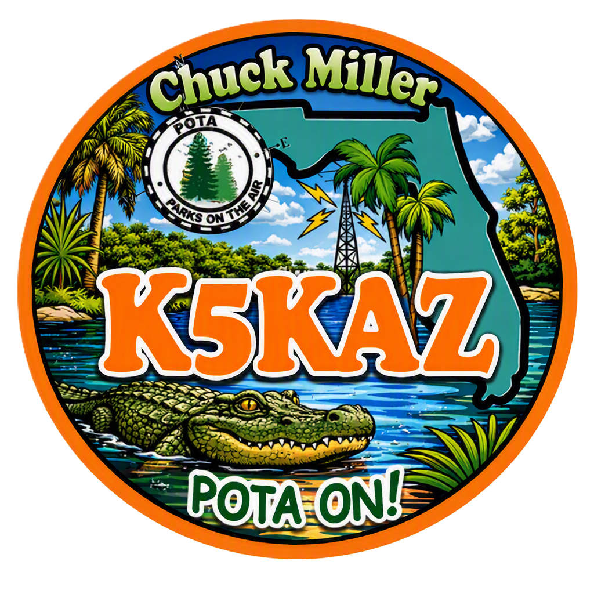

Yaesu FT-710 AES
My primary HF transceiver for operating from the home station.

K5KAZ • AMATEUR RADIO
Welcome to my corner of the airwaves. This site is about my ham radio journey, my station, and the equipment I take into the field for Parks on the Air activations.
Originally from Boston, Massachusetts, I moved to Hudson, Florida in 2013.
I retired from Verizon Communications, formerly New England Telephone, after 36 years.
I earned my Ham Radio Technician license in April 2022, upgraded to General in September 2022, and upgraded to Amateur Extra in September 2026.
I joined the Gulf Coast Amateur Radio Club (GCARC) in June 2022.
View my K5KAZ page on QRZ →01 / HOME STATION
Where the home shack handles HF and VHF/UHF operation.

My primary HF transceiver for operating from the home station.
My VHF/UHF radio for local amateur radio communications.
02 / FIELD GEAR
POTA is where the radio leaves the shack and heads outside.

The FT-891 is one of my go-to radios for portable operation and POTA activations.
03 / ON THE ROAD
A compact setup for staying on the air while traveling.
Paired with an ATAS-120A antenna for mobile operation.